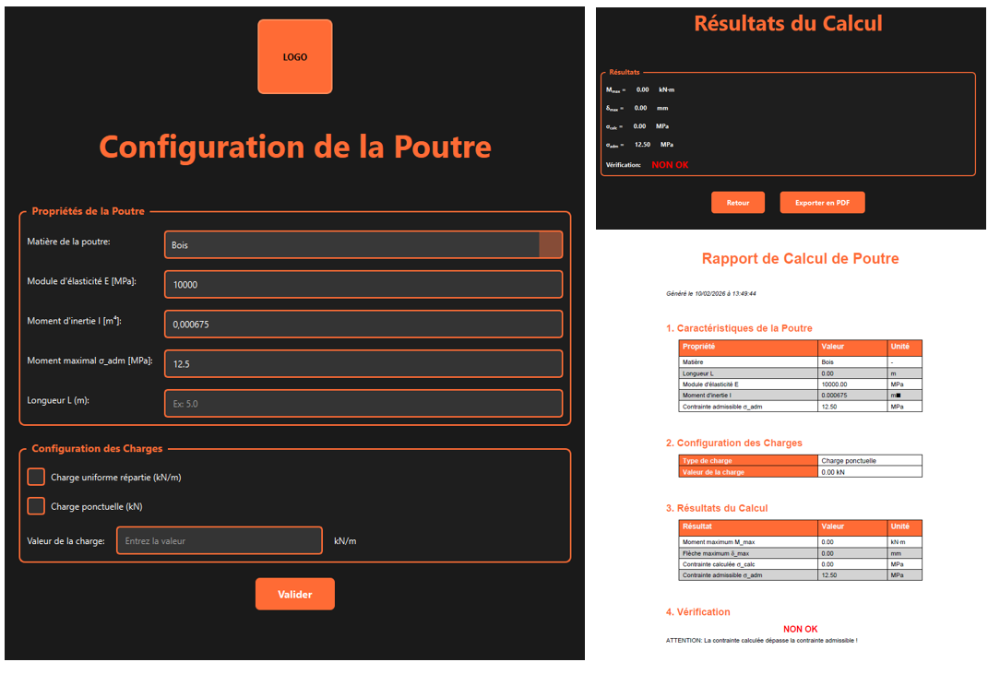

Retour aux projets
Outil de calcul de poutre avec export PDF

Contexte
Développement d'une application Python complète pour automatiser des calculs complexes nécessitant une grande précision. L'application génère automatiquement des documents PDF professionnels à partir des résultats calculés, éliminant ainsi les étapes manuelles de reporting.
Objectifs
- Automatiser des calculs complexes avec haute précision
- Générer des documents PDF professionnels automatiquement
- Assurer la traçabilité et la reproductibilité des calculs
- Réduire le temps de production des livrables
Fonctionnalités
- Moteur de calcul robuste avec validation des entrées
- Génération automatique de PDF avec mise en forme professionnelle
- Gestion de templates personnalisables
- Export des résultats intermédiaires pour audit
- Interface en ligne de commande et API
Technologies utilisées
Python, ReportLab/FPDF, NumPy, SciPy, Pandas, Jinja2
Résultats
L'application a permis de réduire drastiquement le temps de production des documents, passant de plusieurs jours à quelques heures. La qualité et la cohérence des livrables ont été améliorées, et la traçabilité complète des calculs facilite les audits et les révisions.